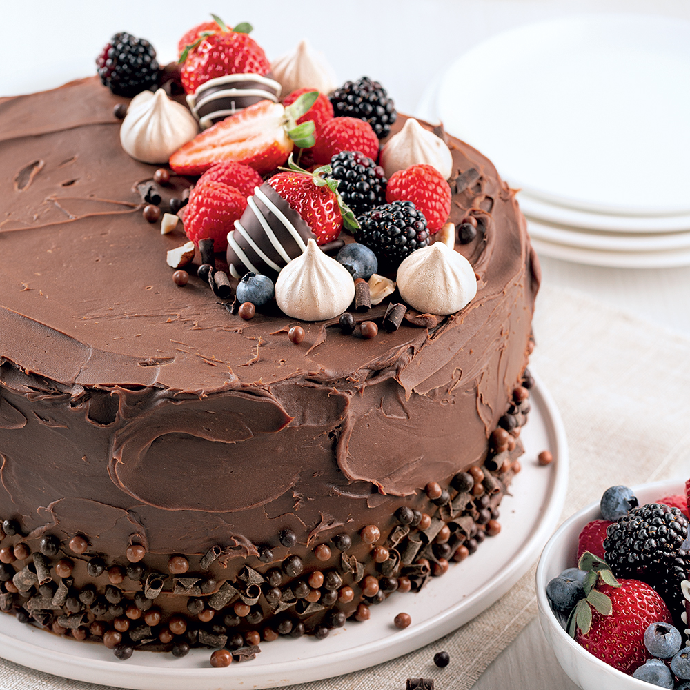

Recette de gàteau au chocolat
ingrédients
- 200g de chocolat
- 100g de sucre
- 3 oeuf
- 100g de farine
- 100g de beurre
- 1 cuillére à café d'éxtrait de vanille
- 1 pincée de sel
Etapes
- péracauffer le four à 180°C (350°F)
- faire fondre le chocolat et le beurre au bain-marie
- mélanger le sucre et les oeufs jusqu'à obtenir une texture mousseuse
- ajouter la farine. l'éxtrait de la vanille et la pincée de sel qu mélange
- incropore le mélange de chocolat fondu
- verse dans une moule beurée et fariné
- cuire au four pendant 20-25 min. vérifier la cuisson avec un couteau
- laisser refroidir avant de démouler et de servir
photo et video
